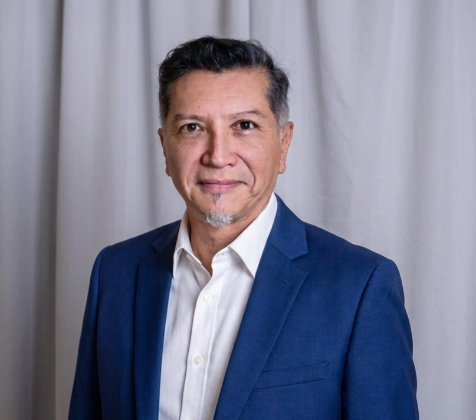
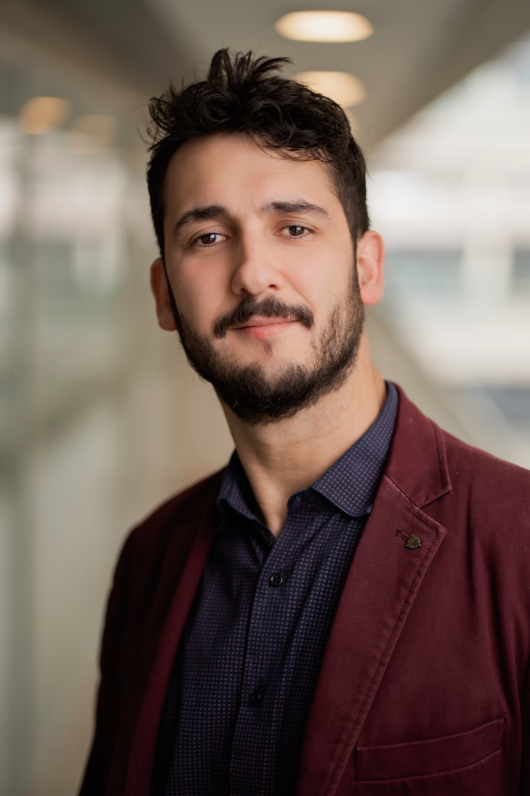

Sociedad de Estudios en TFP
Equipo clínico chileno acreditado en Psicoterapia Focalizada en la Transferencia (TFP), dedicado a ampliar el acceso a tratamientos rigurosos, eficaces y humanamente comprometidos.
Quiénes somos
Somos Grupo TFP Chile, un equipo clínico dedicado a la formación, difusión y tratamiento especializado de los trastornos de la personalidad. Todos sus miembros están acreditados como terapeutas en Psicoterapia Focalizada en la Transferencia (TFP), modelo con nivel 1 de evidencia por la APA para el tratamiento de los trastornos de la personalidad, y contamos con dos supervisores acreditados, todos por la International Society of Transference Focused Psychotherapy (ISTFP).
Desde 2019, combinamos práctica clínica con pacientes complejos, docencia universitaria y supervisión, en colaboración con instituciones nacionales e internacionales. Nos une el compromiso de formar profesionales altamente capacitados y de ampliar el acceso a tratamientos rigurosos, eficaces y humanamente comprometidos para quienes enfrentan dificultades persistentes en su manera de relacionarse consigo mismos y con los otros.
Tratamiento especializado de pacientes con patología grave de personalidad.
Docencia universitaria y programas de especialización para profesionales de la salud mental.
Acompañamiento a terapeutas en formación, con supervisores acreditados por ISTFP.
Equipo
Un grupo interdisciplinario de psiquiatras y psicólogos clínicos, todos acreditados por la ISTFP, que combina práctica clínica, docencia e investigación.
Directora y Fundadora
Psicóloga clínica especializada en trastornos de la personalidad y Supervisora acreditada en TFP por ISTFP. Magíster en Criminología y Victimología. Fundadora y docente del Instituto de TFP Hispanoamérica. Combina práctica clínica, docencia y supervisión de terapeutas que trabajan con organización de personalidad límite, narcisista y otras estructuras graves.

Director Regional y Fundador
Psiquiatra de adultos, Magíster Clínico en Trastornos Severos de la Personalidad y profesor de la Universidad de Valparaíso. Terapeuta y Supervisor acreditado en TFP por ISTFP. Se ha especializado en el tratamiento de pacientes con patología grave de personalidad y en la formación de residentes y profesionales de la salud mental.

Secretario General y Fundador
Psicólogo clínico, Doctor en Psicoterapia y Magíster en Psicología Clínica. Certificado como terapeuta en TFP por ISTFP y parte del Comité Latinoamericano de la International Society for the Study of Personality Disorders (ISSPD). Docente en la Universidad Adolfo Ibáñez, combina práctica clínica con adolescentes y adultos, docencia e investigación.
Tesorera y Fundadora
Psicóloga clínica, especialista en trastornos de la personalidad y psicoterapia focal psicoanalítica. Certificada como terapeuta en TFP por ISTFP. Atiende adolescentes y adultos en consulta privada, y se desempeña como docente en diagnóstico psicológico de adultos en la Universidad de los Andes, con experiencia en dispositivos públicos de salud mental.
Psicóloga clínica
Especializada en adolescentes y adultos con trastornos severos de la personalidad. Certificada como terapeuta en TFP por ISTFP y Magíster en Criminología y Victimología. Se dedica tanto a la práctica clínica como a la formación de otros profesionales en diagnóstico y tratamiento de trastornos de personalidad.
Psicóloga clínica
Psicóloga clínica de adultos, con formación en trastornos severos de la personalidad por la Universidad de Valparaíso. Certificada como terapeuta en TFP por ISTFP. Docente en la Universidad de los Andes en psicodiagnóstico y trabajo con pacientes complejos. Ejerce en consulta privada, integrando una perspectiva psicodinámica y el trabajo con pruebas proyectivas.
El modelo
Transference-Focused Psychotherapy (TFP) es un tratamiento psicodinámico basado en la teoría de las relaciones de objeto, desarrollada por Otto Kernberg y colaboradores.
Diseñado específicamente para personas con trastornos de la personalidad, utiliza la relación terapeuta–paciente como vía principal para comprender y transformar patrones profundos de identidad y de relación consigo mismo y con los otros.
Red de trabajo
Trabajamos en red con instituciones nacionales e internacionales dedicadas al estudio y tratamiento de los trastornos de la personalidad.
Sitio profesional de la Directora y Fundadora.
Sitio profesional del Secretario General y Fundador.
Centro de salud mental del Director Regional y Fundador.
Instituto Milenio para la Investigación en Depresión y Personalidad.
Magíster en Trastornos Severos de la Personalidad.
Encuentro anual sobre trastornos severos de la personalidad.
International Society of Transference-Focused Psychotherapy.
International Society for the Study of Personality Disorders.
Contacto
Para consultas clínicas, formación o colaboraciones institucionales.